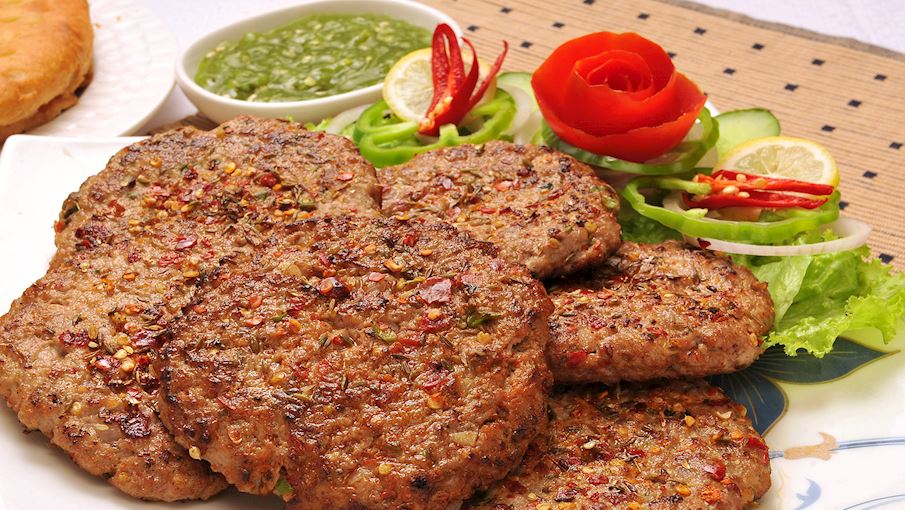

CHAPLI KABAB

DESCRIPTION
Chapli kebab is the king of all kababs. It has a crunchy texture,
tangy and nutty taste. It is full of aromas and bursting with flavors.
Chapli kababs are traditionally served with yogurt sauce, salads, and naan bread.
The unique taste of chapli kabab comes from spices such as dried coriander,
pomegranate seeds and green/red chillies.
Its name is derived from a Pashto word chaprikh, meaning flat, and
even though chapli kabab is often said to have originated in Peshawar,
today it stands as a favorite throughout Pakistan, India, and Afghanistan.
INGREDIENTS
- Whole Spices
- 1½ tablespoon dried pomegranate arils (put more if like extra crunch)
- 2 tablespoon red chilli flakes, adjust to taste
- 1 tablespoon cumin seeds
- 1½ tablespoon coriander seeds
- ½ tablespoon fennel seeds, (optional)
- Ground Spices
- ½ tablespoon Kashmiri chilli powder, (for color, substitute with paprika)
- 1 teaspoon ginger powder
- 1 teaspoon black salt, (or pink salt or just salt)
- ½ teaspoon gram masala powder
- ½ teaspoon turmeric powder
- For Kabab
- ½ kg ground meat, (lamb or beef) 20-30% fat
- 1 cup chopped onion, about 1 large, squeeze excess water (if any) and discard
- 1 cup cornmeal , or maizemeal
- 2 tablespoon ginger garlic paste
- 2 tablespoon chopped fresh coriander
- 2 tablespoon chopped green chilli
- 2 tablespoon butter, (or clarified butter)
- ¾ cup chopped tomato, squeeze excess water and discard
- Ghee, (or butter or tallow)
HOW TO MAKE?
For Spice Mix
- Roast cumin, coriander, dried pomegranate aril and fennel seed in a pan for 1 minutes until fragrant. Remove from heat.
- Immediately, add ground spices in the hot pan and stir for few second. Transfer spices to a food processor and crushed them lightly to get a coarse powder. Set aside.
For Chapli Kabab
- In large bowl take mince, spice mix, green chillies, ginger, garlic, onions, fresh corriander and butter, mix well. Marinate for 30 minutes.(Preferably 4-6 hours.)
- Just before frying, add tomato, egg and cormeal. Mix well until mince gets a dough like consistency.
Protip: Fry a small petty of kabab and do a taste test. Adjust if needed. (This step is optional.)
- Roll out balls of kabab and flatten with hands.
- Shallow fry kabab in clarified butter or tallow for 2-3 minutes on medium flame until crispy and lighty charred.
SPECIAL NOTES
- Ground Meat: You can use ground beef, lamb, or chicken for this recipe. Remember the fattier the better. Ground meat or mince needs to have 20% to 30% fat. Extra fat in the mince keeps the kabab moist and soft. It also binds the kabab and prevents it from breaking.
- Spices: Dried pomegranate arils can be found in Indian stores. If you can't find it, substitute it with mango powder ( AKA amchoor powder) or 2 teaspoon of pomegranate molasses can also be a good substitute. Fennel seeds (AKA sauf), is also optional.
- Red chili flakes: I'm using red chili flakes to control the heat in the recipe. You can switch red chili with a load of slices of green chilies that is the more authentic way.
- Onion: Onions add some sweetness and taste to the recipe, just be sure to squeeze excess onion water.
- Tomato: Use firm and ripened tomatoes.Avoid soft and tender tomatoes with loads of water. Add tomatoes just before frying and roll kebab as go.
- Cornmeal: This ingredient is not the same as cornflour. Cornmeal is yellow slightly gritty flour that binds the kebab and absorbs the moisture. Adjust the measure if kebabs are breaking.
- Egg: This ingredient also helps to bind the kebab. You can add scrambled eggs (made with 2 eggs) along with tomatoes in the recipe.
- Own Taste: Most commercial dhabas add MSG in chapli kabab for the flavor kick. But I feel the recipe tastes great on its own.
- Tallow: Chapli kababs are shallow fried in tallow (charbi ka tel), which is hard fat obtained from cows. You can learn more about tallow here. If you do not have tallow then shallow fry in ghee or butter.
- Store Chapli Kabab: Cooked Chapli kabab can be stored in the fridge in an air-tight jar. Reheat in a covered plate in the microwave before serving. You can also freeze it for up to 2 months.
NUTRITION INFORMATION
Serving: 1kabab ,
Calories: 239kcal ,
Carbohydrates: 54g ,
Protein: 4g ,
Fat: 2g ,
Saturated Fat: 1g ,
Polyunsaturated Fat: 1g ,
Monounsaturated Fat: 1g ,
Cholesterol: 1mg ,
Sodium: 584mg ,
Potassium: 179mg ,
Fiber: 4g ,
Sugar: 36g ,
Vitamin A: 574IU ,
Vitamin C: 4mg ,
Calcium: 33mg ,
Iron: 2mg
RECIPE SOURCE